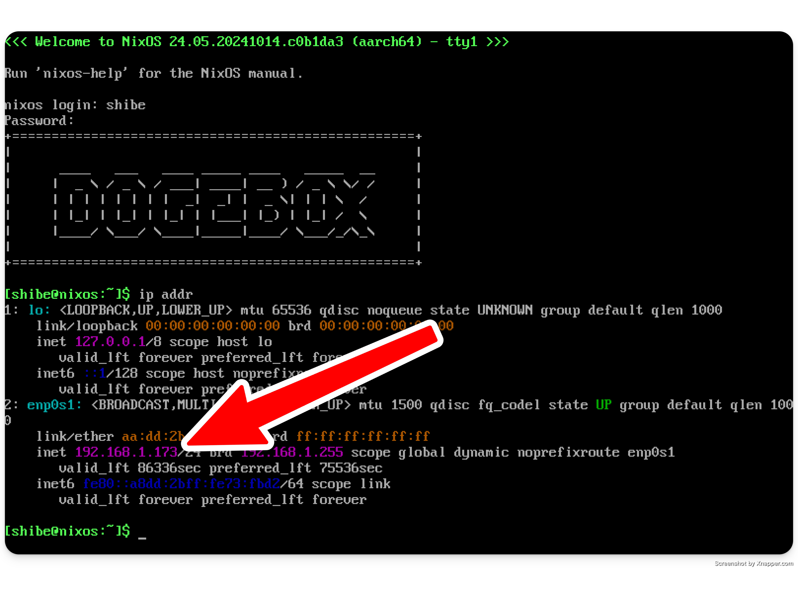

Dogebox Initial Setup
On the first boot of your dogebox, the system will be available on https://dogebox.local:8080/.
In case your network blocks mDNS, which can happen in some cases use the following methods to determine the IP address of the machine.
Determine your IP address
There's a couple of ways to do this:
Access to the machine
If you have access to the machine, you can login with the username shibe, and password suchpass.
Run the command ip addr, which should give you a list of IP addresses. Ignore the first lookback device lo, and look for an IP that starts with 10., 192.168., or 172.16..

No access to the machine
If you've started your machine without a display, or no keyboard, you'll need to determine the IP address using a different method. The easiest way to do this is to login to your router and look at the list of DHCP leases it has given out.
Unfortunately this is out-of-scope for this documentation, but a quick google of your router model and "list devices" should suffice.
Visit setup UI
Once you've got your IP address or confirmed the box is available on dogebox.local, continue setup by visiting the Web UI. This is hosted on port 8080.
eg. If your IP address is 192.168.0.2, you should visit http://192.168.0.2:8080 in your browser.
See Disk Installation to continue.